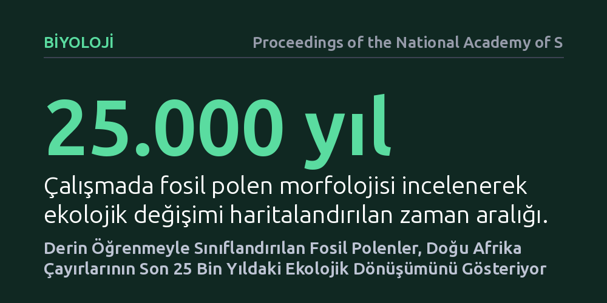

BIYOLOJI · Proceedings of the National Academy of Sciences · 2026-10-17
Standart mikroskopla ayırt edilemeyen buğdaygil polenlerinin türlerini belirlemek için derin öğrenme modeli geliştirildi. Modelin fosil polenlere uygulanmasıyla, Doğu Afrika çayırlarının son 25 bin yıldaki ekolojik dönüşümü ve bitki örtüsü dinamikleri ilk kez ayrıntılı biçimde haritalandı.
Birbirine ikiz kadar benzeyen fosil polenlerin yapay zekâyla ayrıştırılabilmesi, geçmişteki iklim ve ekosistem değişimlerini binlerce yıl geriye giderek bitki türü bazında doğrudan izlemeyi mümkün kılıyor.

Buğdaygiller (Poaceae), savanlardan meralara kadar dünya karasal ekosistemlerinin üçte birinden fazlasını kaplayan ve ekolojik açıdan hayati öneme sahip devasa bir bitki ailesidir. Ancak geçmiş iklim değişikliklerinin bu bitki örtüsünü nasıl şekillendirdiğini anlamak isteyen paleoekologlar uzun süredir aşılması imkânsız görünen bir engelle karşı karşıyaydı. Buğdaygil türlerinin polen tanecikleri, standart ışık mikroskobu altında incelendiğinde neredeyse birbirinin tıpatıp aynısı olan tek gözenekli küresel yapılar sergiler.
Bu morfolojik benzerlik nedeniyle jeolojik katmanlardan çıkarılan fosil polenler, hangi cinse veya ekolojik gruba ait olduğu belirlenemeden genel olarak sadece buğdaygiller başlığı altında kaydediliyordu. Kuraklığa ve yüksek sıcaklığa dayanıklı tropik otlar ile serin iklimleri tercih eden çayır türleri aynı sepete konuluyordu. Bu durum, son on binlerce yıldaki kuraklık ve iklim dalgalanmalarının Afrika savanlarını tam olarak nasıl dönüştürdüğünü tür düzeyinde izlemeyi imkânsız hale getiriyordu.
Araştırmacılar bu yöntemsel engeli aşmak amacıyla insan gözünün ve klasik optik mikroskopların yakalamakta yetersiz kaldığı ince yüzey dokularına odaklandı. Günümüz buğdaygil türlerinden toplanan yüksek çözünürlüklü polen görüntüleri, katmanlı makine öğrenmesi ve evrişimli sinir ağı mimarileri kullanılarak eğitildi. Algoritma; polen yüzeyindeki mikroskobik süslemeleri, çeper kalınlıklarını ve nano ölçekli doku farklılıklarını ayrıştırarak türleri yüksek doğrulukla tanımayı öğrendi.
Geliştirilen bu derin öğrenme modeli, daha sonra Doğu Afrika'daki tortul katmanlarından çıkarılan ve kesintisiz 25 bin yıllık bir dönemi temsil eden fosil polen kayıtlarına uygulandı. Araştırma ekibi, son buzul çağından günümüze uzanan katmanlardaki binlerce polen tanesini tek tek yapay zekâ analizinden geçirerek her bir jeolojik zaman dilimindeki baskın bitki topluluklarını yeniden sınıflandırdı.
Elde edilen sonuçlar, Doğu Afrika çayırlarının durağan bir yapı sergilemek yerine iklim dalgalanmalarına, yağış rejimlerine ve yangın döngülerine son derece dinamik tepkiler verdiğini gösterdi. Özellikle Son Buzul Maksimumu'ndan bu yana yaşanan sıcaklık ve karbondioksit değişimleri sırasında, C3 fotosentezi yapan serin iklim otları ile C4 fotosentezi yapan tropik savan otları arasındaki dengenin belirgin biçimde el değiştirdiği saptandı.
Modelin sağladığı tür düzeyindeki morfolojik çözünürlük, bölgedeki otlakların kuraklık dönemlerine ve yangın rejimlerine karşı gösterdiği direncin bitki çeşitliliğiyle doğrudan bağlantılı olduğunu kanıtladı. Daha önce homojen bir örtü sanılan savanların, yağış rejimlerindeki uzun vadeli kaymalara bağlı olarak farklı çayır alt grupları arasında düzenli bir nöbetleşme yaşadığı belgelendi.
Bu çalışma, bugüne kadar mikroskop altında ayırt edilemediği için paleontolojik arşivlerde atıl bekleyen devasa bir fosil polen hazinesinin kapısını aralıyor. Elde edilen bulgular, yalnızca geçmişi aydınlatmakla kalmıyor; küresel ısınma ve yağış dengesizlikleriyle karşı karşıya olan günümüz Afrika otlaklarının gelecekte nasıl tepki verebileceğine dair güvenilir bir zemin sunuyor.
Bununla birlikte yöntemin başarısı, fosil kayıtlarının korunma durumu ve eğitim verisetinin coğrafi sınırlarıyla doğrudan bağlantılı kalmaya devam ediyor. Yine de derin öğrenmenin doğa tarihi araştırmalarına bu ölçekte entegre edilmesi, paleoekolojide uzun yıllardır süren tür teşhisi darboğazının aşılması adına somut bir kanıt niteliği taşıyor.